The Milky Way is the galaxy that contains our Solar System, with the name describing the galaxy's appearance from Earth: a hazy band of light seen in the night sky formed from stars that cannot be individually distinguished by the naked eye.
The Sun is the star at the center of the Solar System. It is a nearly perfect sphere of hot plasma, with internal convective motion that generates a magnetic field via a dynamo process. It is by far the most important source of energy for life on Earth.
The Moon is an astronomical body orbiting Earth as its only natural satellite. It is the fifth-largest satellite in the Solar System, and by far the largest among planetary satellites relative to the size of the planet that it orbits.
Mercury is the smallest and innermost planet in the Solar System. Its orbit around the Sun takes 87.97 days, the shortest of all the planets in the Solar System. It is named after the Roman deity Mercury, the messenger of the gods.
Venus is the second planet from the Sun. It is named after the Roman goddess of love and beauty. As the second-brightest natural object in the night sky after the Moon, Venus can cast shadows and, rarely, is visible to the naked eye in broad daylight.
Earth is the third planet from the Sun and the only astronomical object known to harbor life. According to radiometric dating and other evidence, Earth formed over 4.5 billion years ago. Earth's gravity interacts with other objects in space, especially the Sun and the Moon, which is Earth's only natural satellite.
Mars is the fourth planet from the Sun and the second-smallest planet in the Solar System after Mercury. In English, Mars carries the name of the Roman god of war and is often referred to as the 'Red Planet'.

Jupiter is the fifth planet from the Sun and the largest in the Solar System. It is a gas giant with a mass one-thousandth that of the Sun, but two-and-a-half times that of all the other planets in the Solar System combined.
Saturn is the sixth planet from the Sun and the second-largest in the Solar System, after Jupiter. It is a gas giant with an average radius of about nine times that of Earth. It only has one-eighth the average density of Earth; however, with its larger volume, Saturn is over 95 times more massive.
Uranus is the seventh planet from the Sun. It has the third-largest planetary radius and fourth-largest planetary mass in the Solar System. Uranus is similar in composition to Neptune, and both have bulk chemical compositions which differ from that of the larger gas giants Jupiter and Saturn.

Neptune is the eighth and farthest known planet from the Sun in the Solar System. In the Solar System, it is the fourth-largest planet by diameter, the third-most-massive planet, and the densest giant planet. Neptune is 17 times the mass of Earth, slightly more massive than its near-twin Uranus.
Pluto is an icy dwarf planet in the Kuiper belt, a ring of bodies beyond the orbit of Neptune. It was the first and the largest Kuiper belt object to be discovered. Pluto was discovered by Clyde Tombaugh in 1930 and declared to be the ninth planet from the Sun.